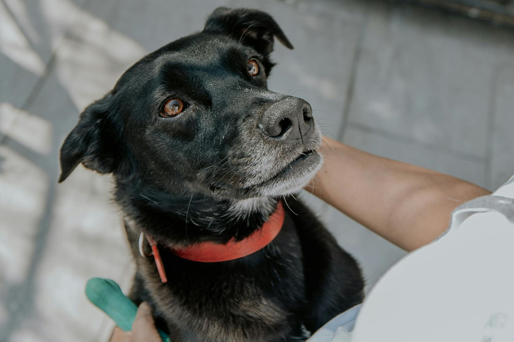
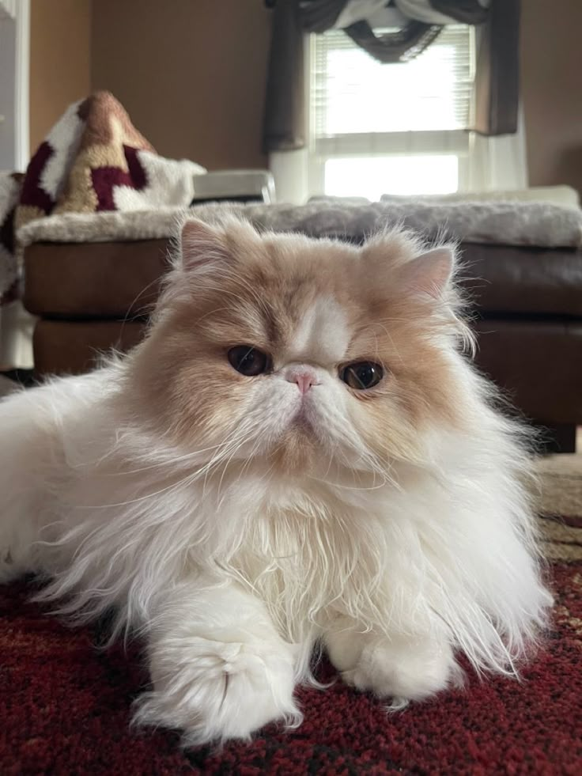
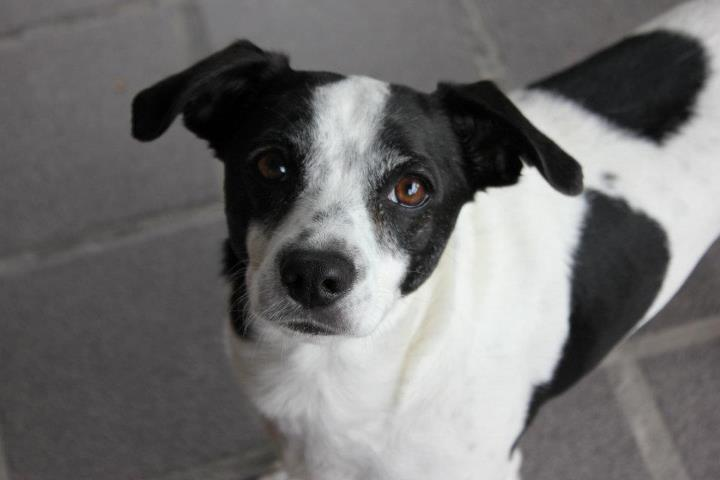
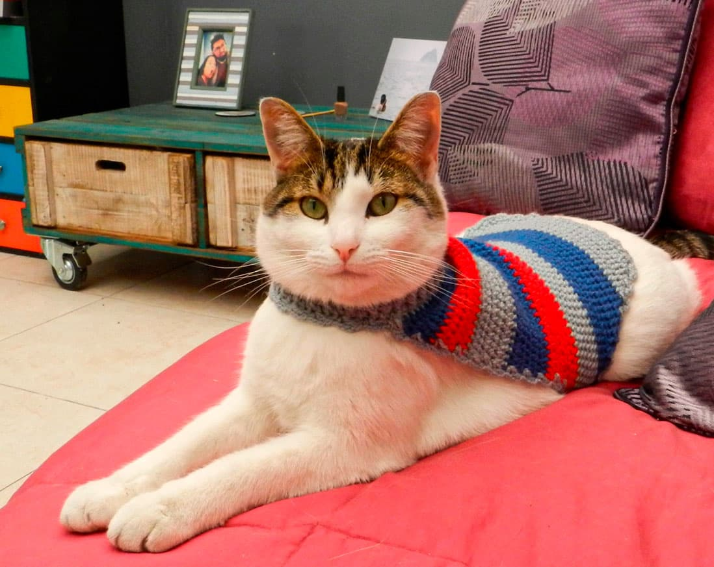
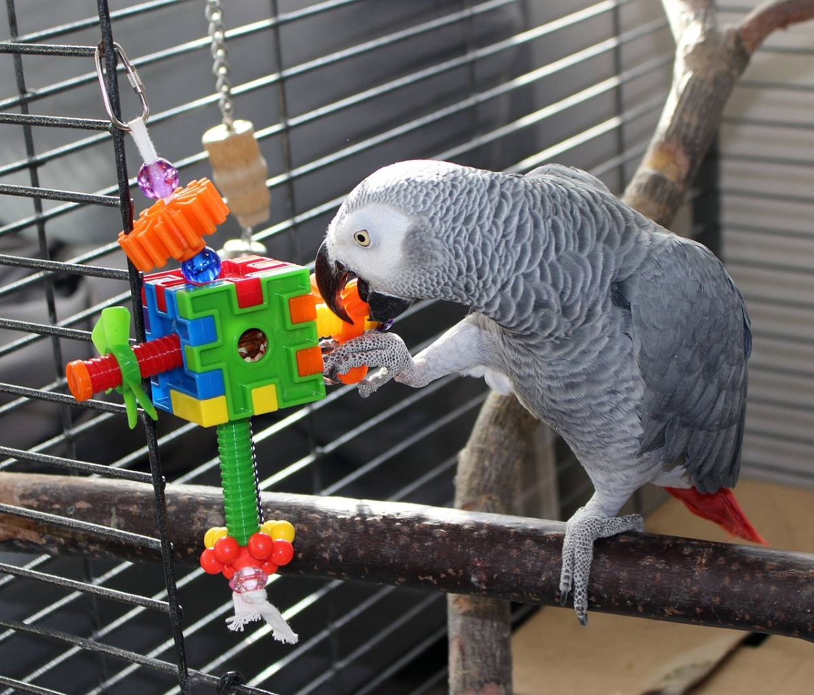

Sube aquí
mascota1.jpg
mascota1.jpg
Rex
DisponiblePerro criollo muy activo, sociable y cariñoso. Ideal para familias que disfruten paseos y juegos al aire libre.
Explora los perfiles y da el primer paso para adoptar.

Perro criollo muy activo, sociable y cariñoso. Ideal para familias que disfruten paseos y juegos al aire libre.

Gatita persa tranquila y tierna, perfecta para ambientes calmados y personas que busquen compañía serena.

Cachorro juguetón y curioso, con mucha energía y facilidad para adaptarse a nuevos espacios y rutinas.

Gatita joven, muy curiosa y afectuosa. Disfruta espacios cálidos, juegos suaves y compañía constante.
Perro de tamaño mediano, noble y obediente. Muy buen compañero para hogares con rutinas activas.

Ave de compañía tranquila, llamativa y sociable. Ideal para hogares atentos a su cuidado y rutina diaria.